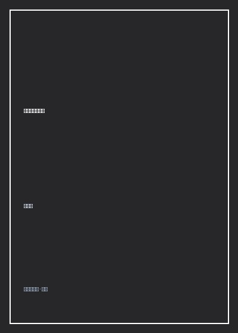

《改变人心的技巧》

总体观点
硬性说服只会激起对方更强烈的心理防御盾牌：人类对外部强制指令具有天然的抗拒本能，真正高超的心理引导绝非用强力压制他人，而是通过巧妙构筑情境，让对方主动觉得‘这是我自己的英明决定’。
利用认知失调与互惠原则施加无形心理杠杆：从‘登门槛效应’的微小承诺绑定，到‘留面子效应’的极限施压后让步，精准把握人类大脑在面对亏欠感与一致性维持时的行为规律。
心理学技巧的终极基石是真诚的共情与利他：操纵术与善意引导的本质区别在于是否尊重对方的合法利益；唯有建立在双赢基础上的心理同频，才能构建经得起时间考验的稳固信任关系。
核心观点
-
1. 登门槛效应：用微小请求诱导不可逆的宏大承诺
直接提出巨大要求容易遭到断然拒绝；先让对方接受一个举手之劳的微小请求，利用人类维持自我形象一致性的冲动，顺理成章完成大目标的推进。
募捐者先请居民在‘支持环保倡议书’上签个名（极小动作），一周后再上门请求捐款二十元，成功率比直接募捐提升三倍以上。 -
2. 留面子效应：大让步引发的深层内疚补偿机制
先提出一个对方明知不可能答应的极高要求被拒绝后，立刻退而求其次提出你真正的核心诉求；对方会把你的退让视为恩惠，从而产生补偿性妥协。
找朋友借款一万元被拒后，顺势提出‘那能不能先借我五百块应急’，朋友出于拒绝大请求的愧疚感几乎百分之百会立刻掏钱。 -
3. 同侪压力与社会认同：用‘大家都这样’消解决策焦虑
在不确定情境下，人本能地倾向于观察同伴的行为作为行动指南；展示群体的广泛采纳度，是消除抗拒最高效的催化剂。
餐厅服务员推荐菜品时不直接夸赞美味，而是强调‘这是今天八成客人必点的招牌菜’，客户点单率大幅飙升。 -
4. 批评的三明治法则：将刺耳建议包裹在真诚赞美中
开门见山的批评会立刻触发大脑扁桃体的战斗或逃跑反应；先真诚肯定对方的辛勤付出与局部亮点，提出改进点后，再以积极信任结尾。
主管指导下属方案：‘报告的数据调研非常详实（肯定），如果在第三章把市场竞品对比补充进去就更完美了（建议），我相信你改完一定会非常出色（激励）。’ -
5. 赋予自主权的话术魔法：给对方两个选项而非逼迫就范
面对命令人会本能反抗，但面对选择题人会沉浸在挑选的自主幻觉中；设计两个结果都符合你预期的选项供对方挑选。
母亲不催促孩子‘快去做作业’，而是问‘你想先写数学还是先背英语单词？’孩子在行使选择权中乖乖走向书桌。
全书结构
-
第一章：卸下心防的第一步（建立首因效应与非语言同频）
解析人际破冰中的心理潜规则；探讨微表情、眼神接触频率、身体姿态镜像模仿对潜意识好感度的强力塑造。
在交谈中不动声色地模仿对方端咖啡杯与身体前倾的节律，科学实验证明能显著提升谈判双方的成交信任率。 -
第二章：说服的隐形杠杆（登门槛与留面子心理战术）
系统拆解经典社会心理学实验；指导如何在职场向上汇报、商务谈判与日常推销中合理运用进退心理杠杆。
分析房产经纪人如何先带客户看两套高价烂房，再带看目标房源，利用对比反差促成闪电签约。 -
第三章：化解冲突的心理气垫（如何抚平愤怒与戒备）
面对愤怒指责时的情绪拆弹术；阐明‘情绪共情先行、事实确认随后’的沟通逻辑，化干戈为玉帛。
客户投诉现场，客服第一句话绝不辩解推诿，而是坦诚表达‘听到您遭遇这种糟糕体验我感到非常抱歉和难过’以迅速降温怒火。 -
第四章：激励与引导的罗森塔尔效应（心想事成的期望魔法）
探讨管理学与家庭教育中的积极心理暗示；阐述真诚的期待如何激发对方沉睡的自尊与潜能，达成惊人蜕变。
教师在班级名单中随机圈选普通学生伪称‘极具天才潜能’，数月后这批学生的真实学业成绩出现显著统计学跃升。 -
第五章：构建不可动摇的长期信任（超越套路的至高心法）
总结全书伦理边界；多湖辉告诫读者：技巧若脱离了利他与真诚的灵魂，终将反噬施术者；唯有将他人利益置于心中，方能赢得人心。
全书结语：最高级的说服是不说服，让真诚如春风化雨般润物细无声，才是改变他人心灵最神圣的艺术。